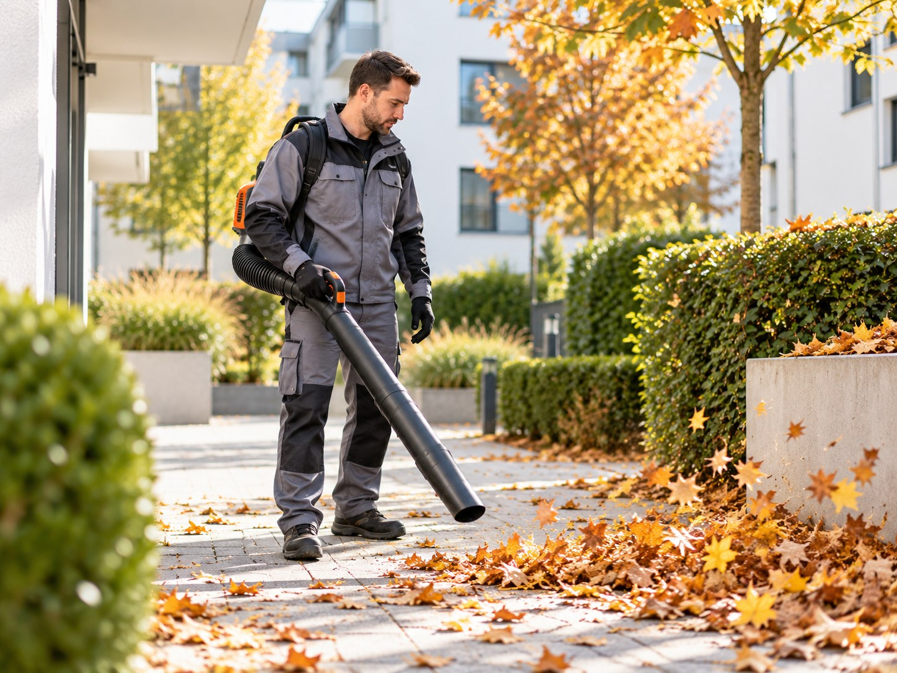
GARTEN
Garten & Grünpflege
Rasen, Hecken, Sträucher, Unkraut und Außenanlagen gepflegt halten.
RD Homemaster übernimmt die Arbeiten rund um Ihre Immobilie – von Gartenpflege und Winterdienst bis zu Treppenhausreinigung, Außenreinigung, Poolpflege, Dachrinnenreinigung und laufender Objektbetreuung.
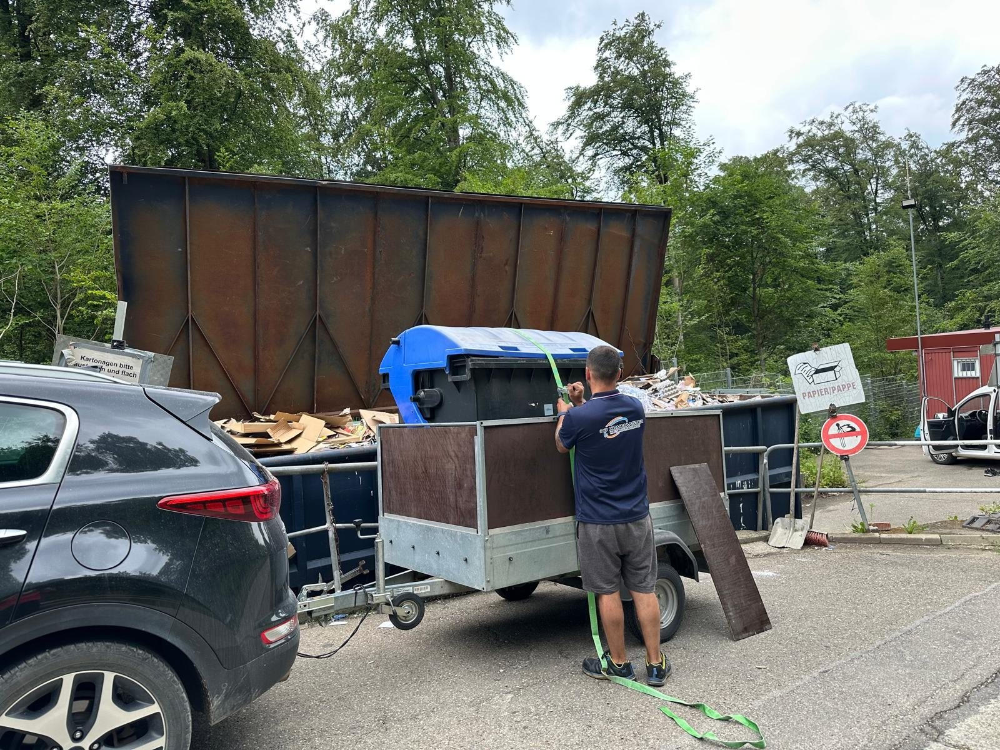
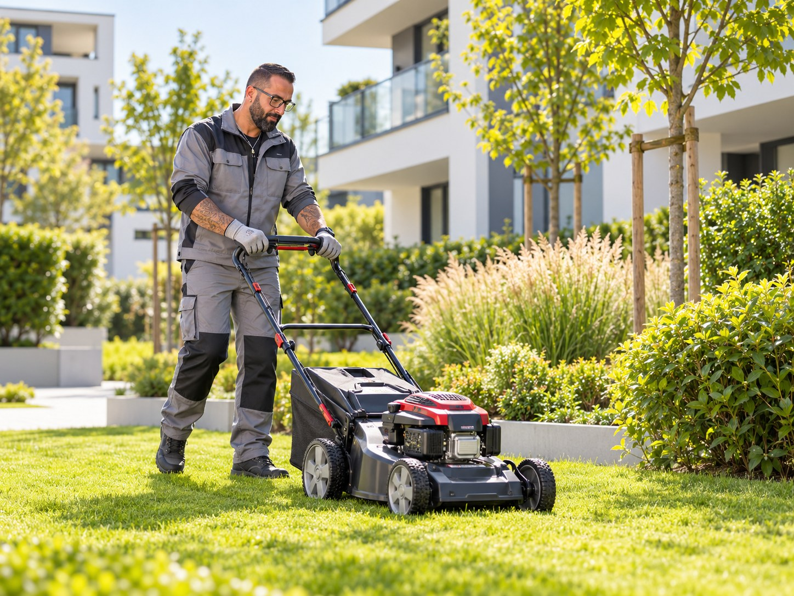
Rasenpflege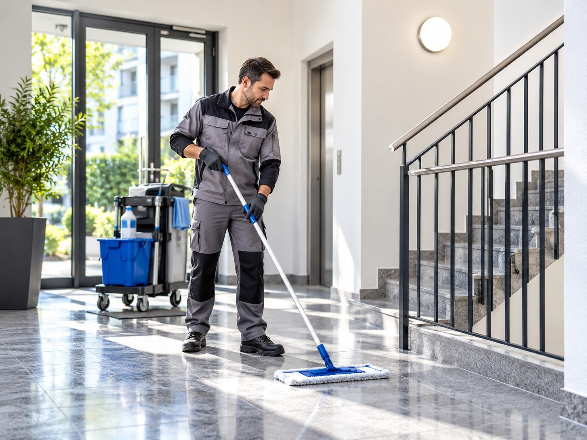
Reinigung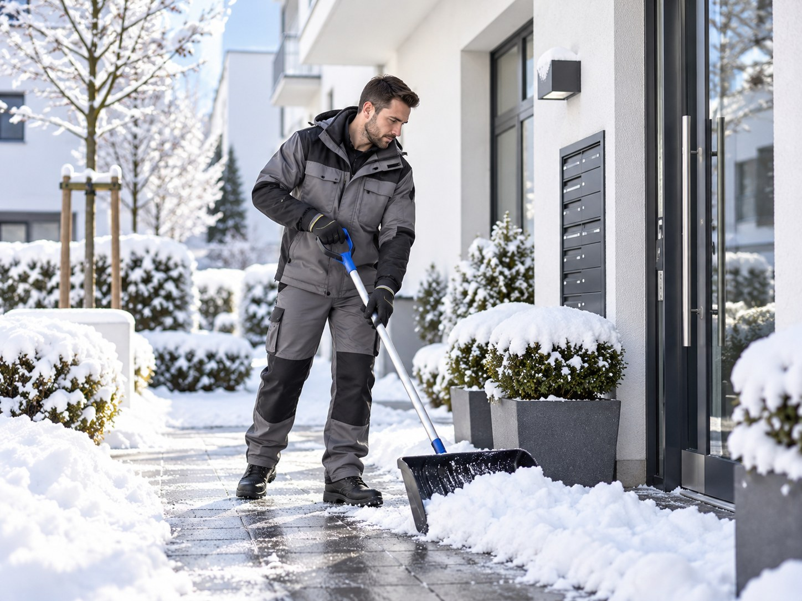
WinterdienstRUNDUM-SERVICE
Statt mehrere Ansprechpartner zu koordinieren, erhalten Sie viele typische Hausmeisterleistungen gebündelt aus einer Hand – klar beschrieben, zuverlässig organisiert und passend zu Ihrem Objekt.

Rasen, Hecken, Sträucher, Unkraut und Außenanlagen gepflegt halten.
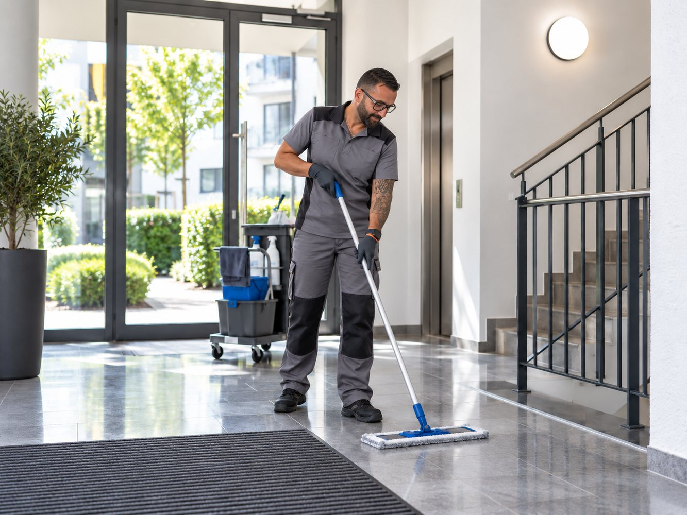
Treppenhaus, Fenster, Eingänge und gemeinschaftliche Bereiche ordentlich reinigen.
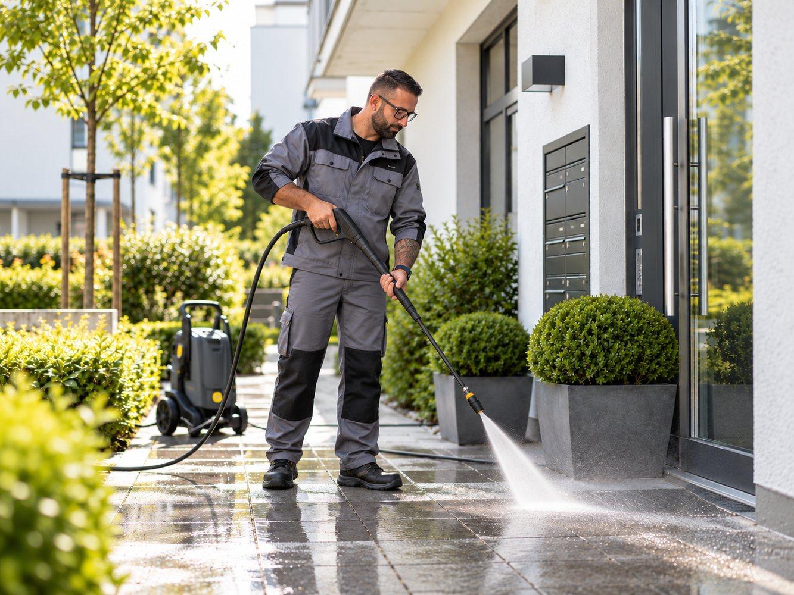
Gehwege, Einfahrten, Hofflächen und geeignete Fassaden gründlich reinigen.
Winterdienst, Laub, Dachrinnen und weitere saisonale Aufgaben zuverlässig übernehmen.
ÜBER UNS
Wir möchten nicht einfach nur Arbeiten ausführen, sondern Immobilien dauerhaft gepflegt, sauber und funktional halten. Genau dafür steht RD Homemaster.
RD Homemaster ist Ihr Hausmeisterservice aus Oberboihingen für Privat- und Gewerbeobjekte im Raum Esslingen. Wir kümmern uns um die laufende Pflege, Reinigung und Betreuung Ihrer Immobilie – zuverlässig, sauber und mit direktem Ansprechpartner.
Ob Gartenarbeiten, Winterdienst, Treppenhausreinigung, kleinere Reparaturen oder Objektkontrollen: Unser Ziel ist es, Eigentümer, Verwaltungen und Bewohner spürbar zu entlasten und einen gepflegten Gesamteindruck Ihrer Immobilie sicherzustellen.
Wir arbeiten flexibel, pünktlich und mit Blick fürs Detail – einmalig, regelmäßig oder saisonal. So erhalten Sie viele Leistungen aus einer Hand, ohne lange Abstimmungswege.
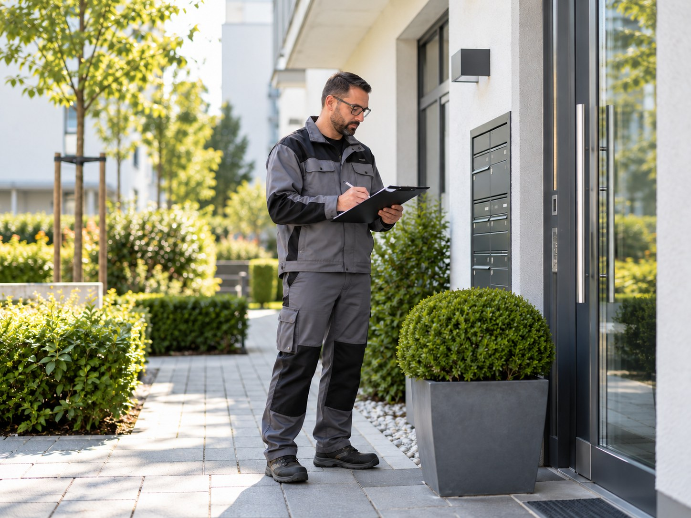
LEISTUNGEN
Jede Leistung ist einzeln buchbar oder kann in eine laufende Betreuung integriert werden. Die Texte sind bewusst professionell, aber verständlich gehalten.
Wir übernehmen die laufende Betreuung Ihrer Immobilie mit regelmäßigen Kontrollgängen, Sichtprüfungen und einem wachsamen Blick auf Sauberkeit, Ordnung und den allgemeinen Zustand des Objekts.
Ideal für Eigentümer, Vermieter, Hausverwaltungen und kleinere Gewerbeobjekte.Wir pflegen Ihre Außenanlagen zuverlässig und sorgen dafür, dass Grünflächen, Beete und Wege rund um das Objekt jederzeit ordentlich, sauber und gepflegt wirken.
Ein gepflegter Rasen verbessert sofort den Eindruck des gesamten Grundstücks. Wir übernehmen regelmäßiges Mähen, Rasenkanten und die laufende Pflege der Grünflächen.
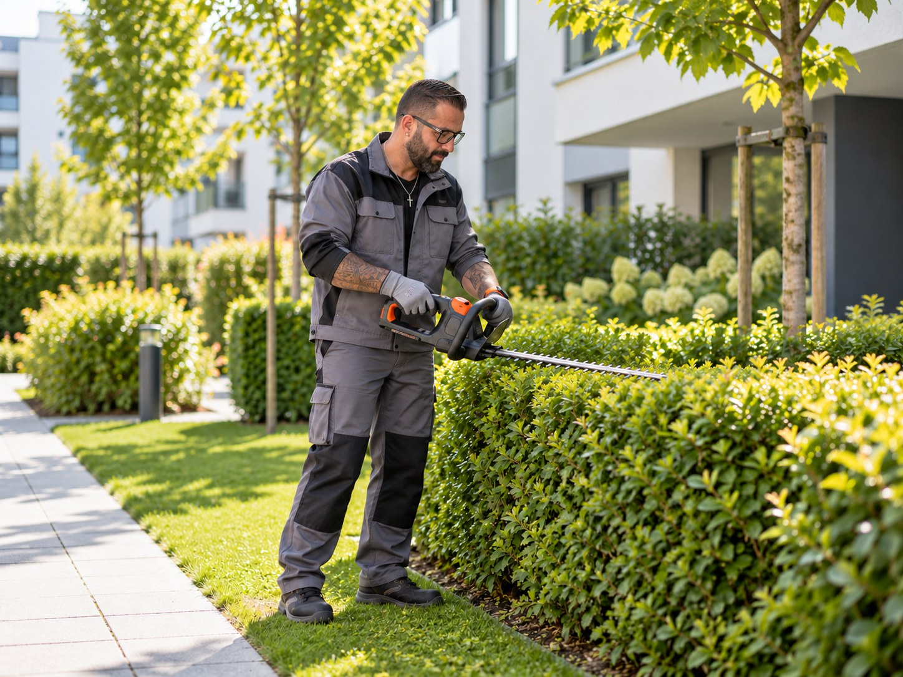
Ob Formschnitt oder Rückschnitt – wir bringen Hecken und Sträucher sauber in Form und sorgen für ein ordentliches Erscheinungsbild Ihrer Außenanlage.
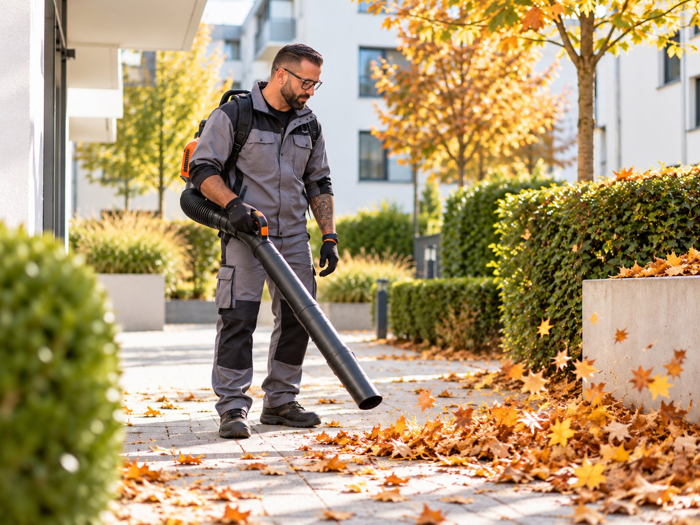
Wir entfernen störendes Unkraut gründlich aus Beeten, Einfahrten, Gehwegen und Randbereichen, damit Ihre Außenflächen wieder sauber und gepflegt aussehen.
Ein sauberes Treppenhaus schafft sofort einen positiven Eindruck. Wir reinigen Treppen, Geländer, Flure und Gemeinschaftsbereiche sorgfältig und regelmäßig.
Wir kümmern uns um die Reinigung wichtiger Innen- und Außenbereiche und helfen dabei, dass Ihr Objekt jederzeit gepflegt und einladend wirkt.
Ob Gehwege, Hofflächen oder Eingangsbereiche – wir reinigen Ihre Außenflächen gründlich und sorgen für Sauberkeit, Sicherheit und einen starken ersten Eindruck.
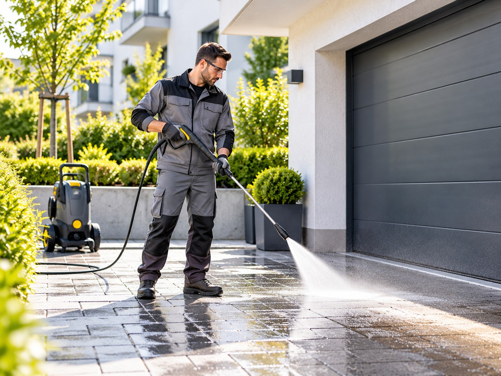
Wir reinigen und dampfen Garageneinfahrten sowie belastete Außenflächen gründlich ab, damit Schmutz, Moos und Ablagerungen zuverlässig entfernt werden.
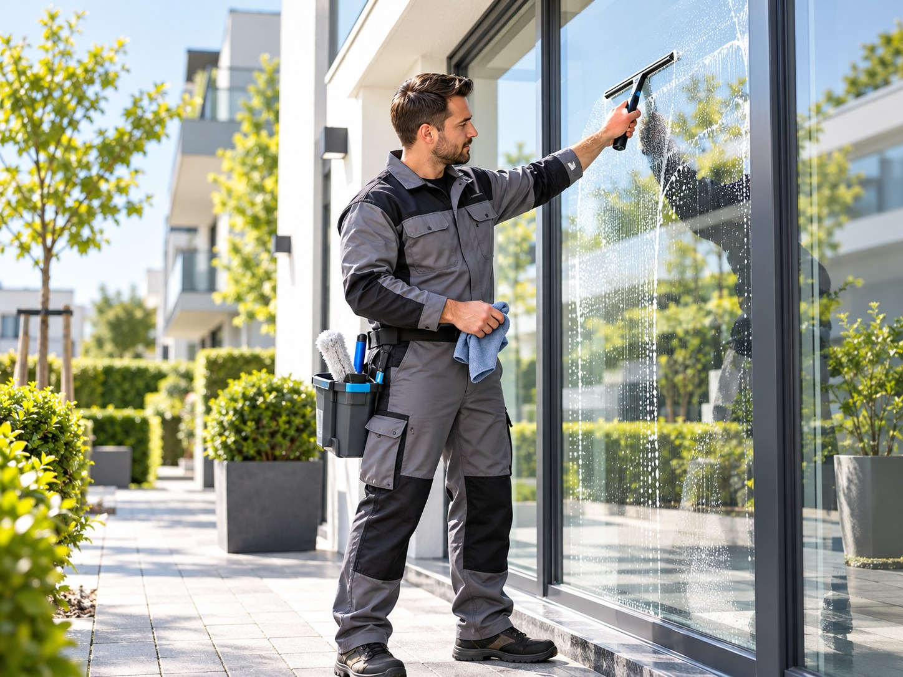
Saubere Fenster und Glasflächen lassen ein Objekt sofort heller und gepflegter wirken. Wir reinigen erreichbare Fensterflächen gründlich und streifenfrei.
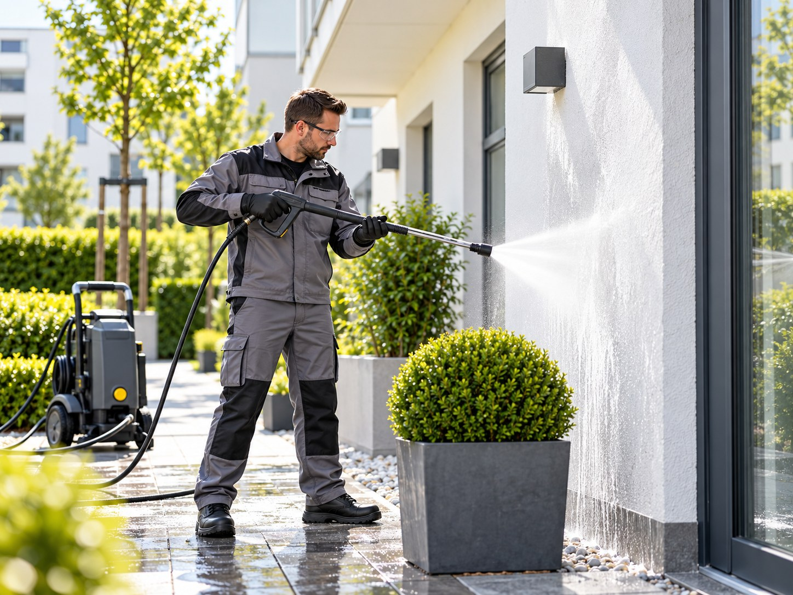
Geeignete Fassaden und Oberflächen reinigen wir schonend und gründlich, damit Verschmutzungen entfernt werden und das Gebäude wieder frischer aussieht.
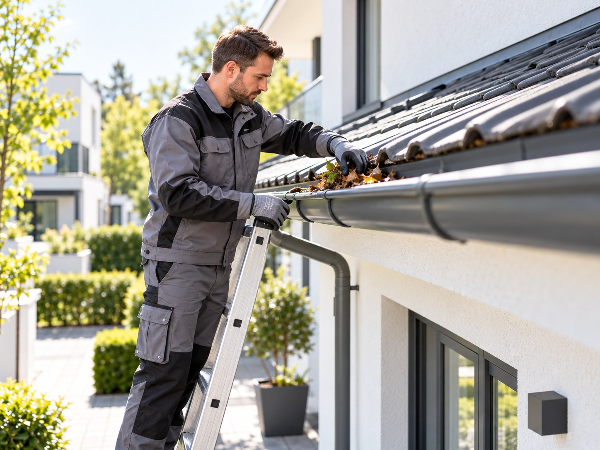
Wir befreien Dachrinnen und zugängliche Ablaufbereiche von Laub und Schmutz, damit Regenwasser wieder ungehindert abfließen kann.
Wir räumen Schnee und halten Wege frei, damit Hauseingänge, Gehwege und Zufahrten auch bei winterlichen Bedingungen sicher und nutzbar bleiben.
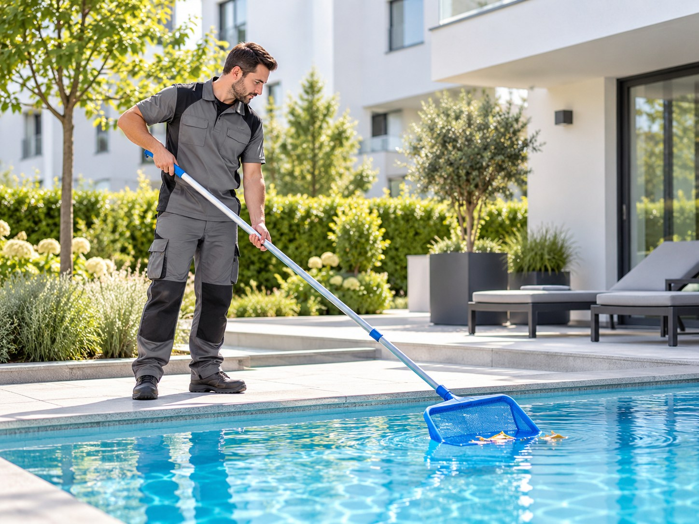
Wir übernehmen die Reinigung und Pflege von Pools und dem direkten Umfeld, damit der Bereich sauber, ordentlich und einladend bleibt.
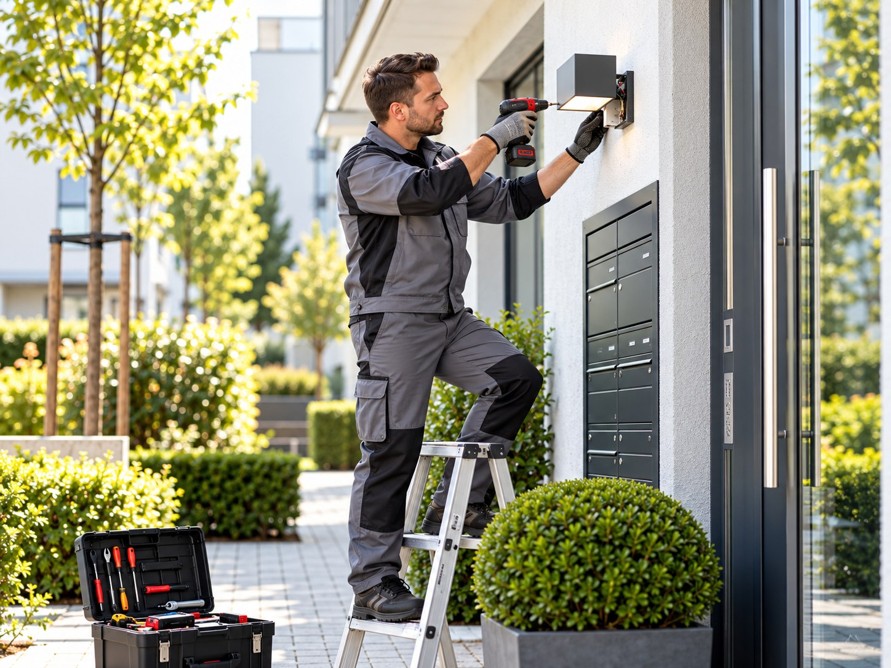
Defekte Leuchtmittel und kleine Beleuchtungselemente tauschen wir in zugänglichen Bereichen schnell und zuverlässig aus.
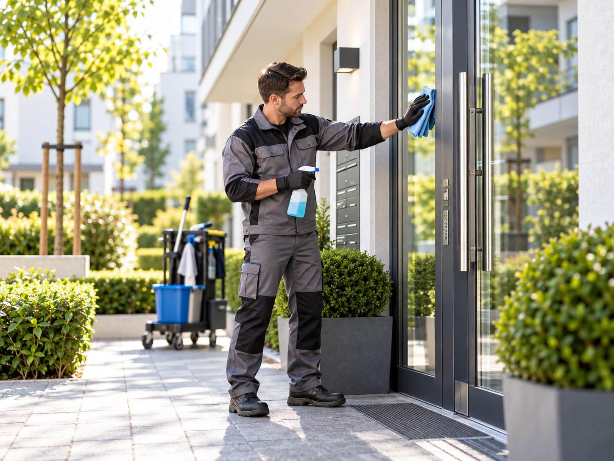
Eine saubere Eingangstür macht direkt einen guten Eindruck. Wir reinigen Türen, Glaselemente und sichtbare Kontaktflächen sorgfältig und ordentlich.
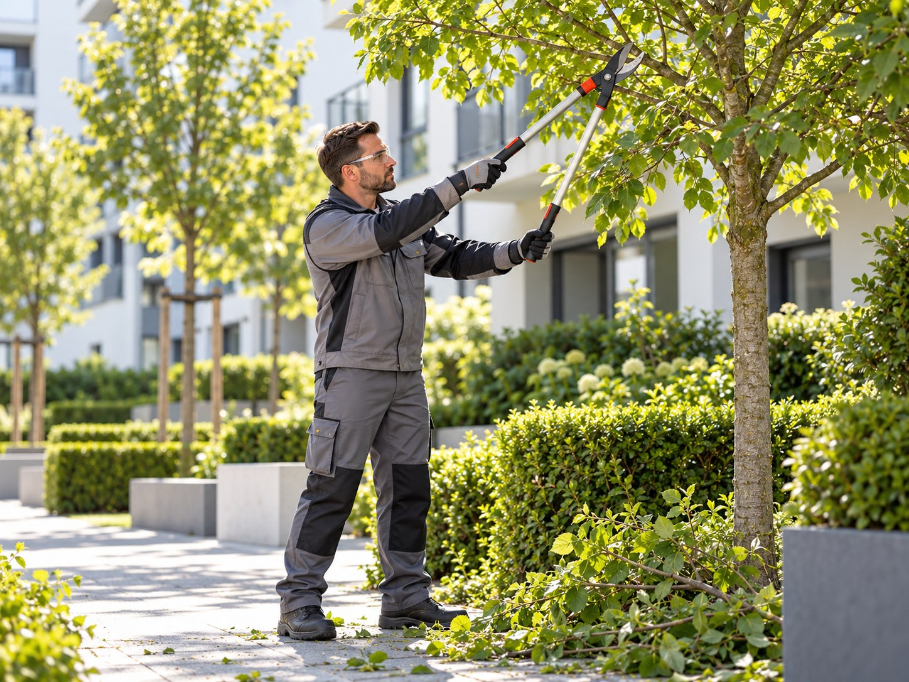
Nach Absprache übernehmen wir Baumfällungen und stärkere Rückschnittarbeiten im Außenbereich, soweit die örtlichen Gegebenheiten, Genehmigungen und der Umfang es zulassen.
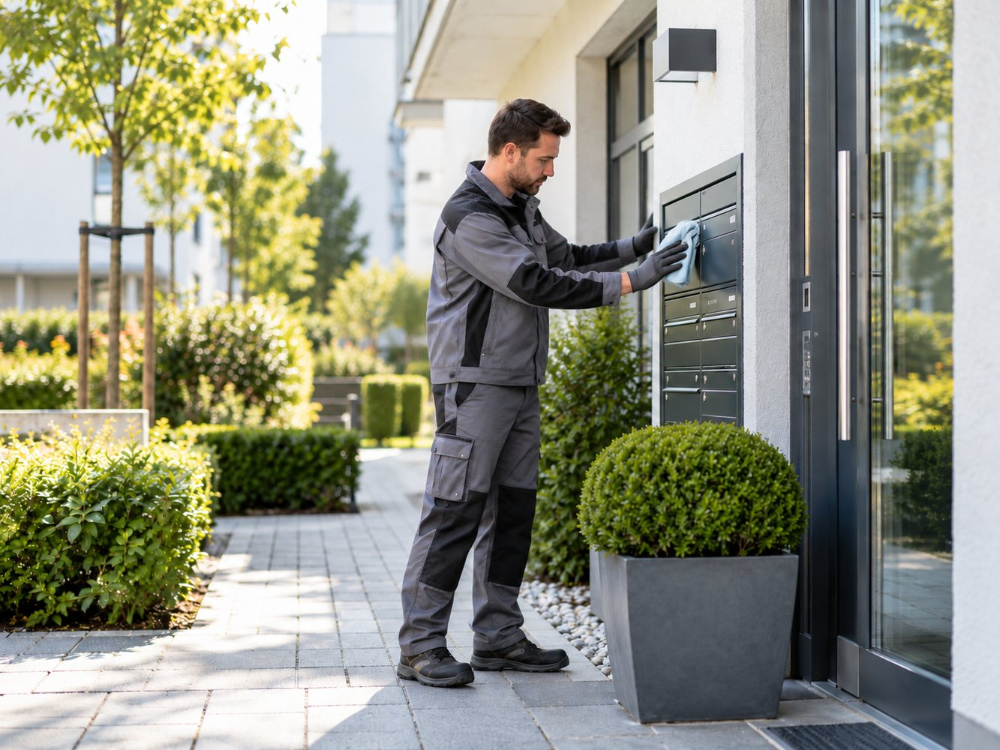
Wir reinigen Briefkastenanlagen und sichtbare Eingangsbereiche, damit Bewohner und Besucher direkt einen gepflegten ersten Eindruck erhalten.
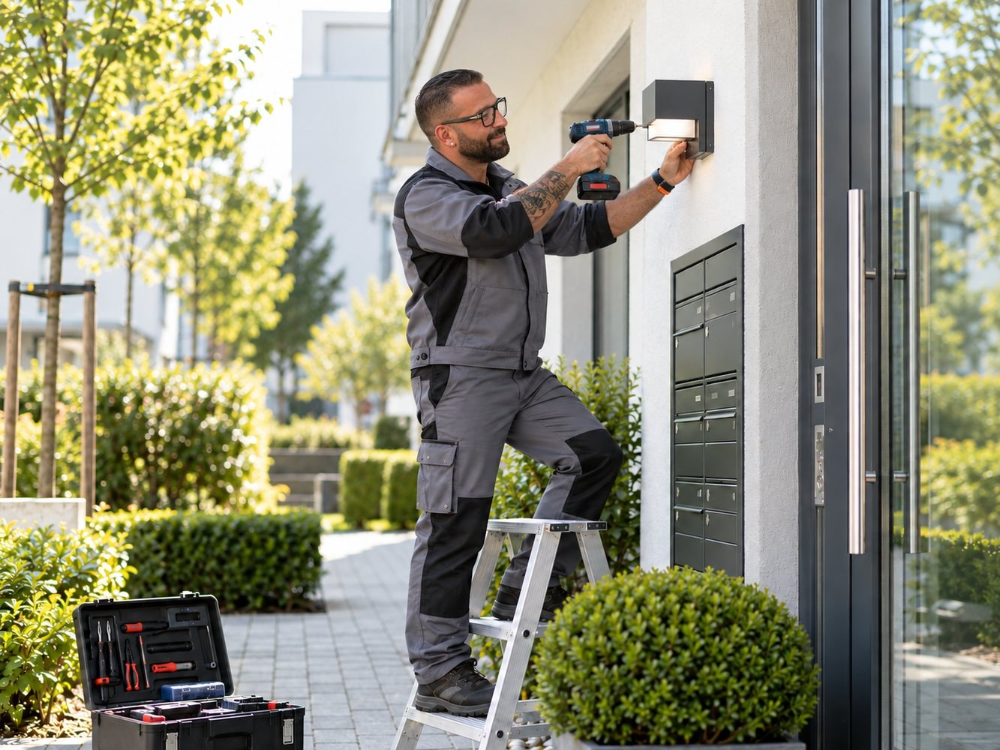
Kleinere Reparatur-, Austausch- und Montagearbeiten übernehmen wir schnell und praktisch im Rahmen des Hausmeisterservices.
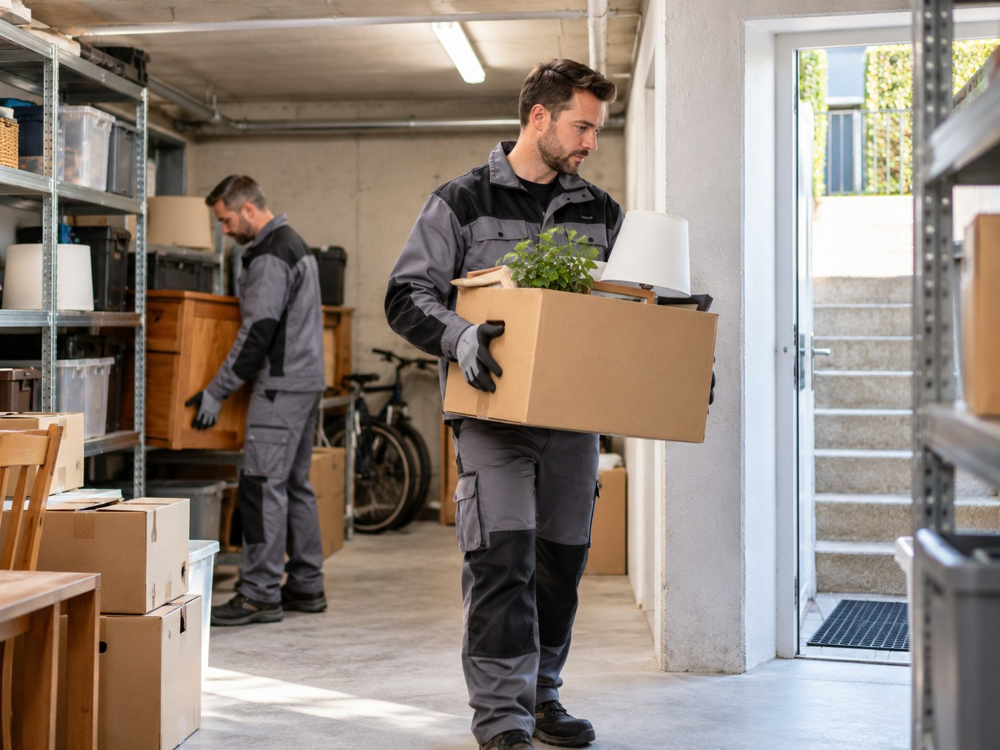
Auf Wunsch unterstützen wir bei kleineren Räumungen und Entrümpelungen von Nebenflächen, Kellern oder anderen zugänglichen Bereichen.
OBJEKTBETREUUNG
Gerade bei vermieteten Immobilien oder Objekten mit wechselnden Aufgaben ist ein verlässlicher Ansprechpartner vor Ort besonders wertvoll.
SO LÄUFT ES AB
Sie rufen an, schreiben eine E-Mail oder schicken eine WhatsApp-Nachricht.
Wir klären, welche Arbeiten benötigt werden und ob der Einsatz einmalig oder regelmäßig erfolgen soll.
Die vereinbarten Arbeiten werden ordentlich und zuverlässig durchgeführt.
Auf Wunsch übernehmen wir die laufende Pflege und Kontrolle Ihres Objekts.
FAQ
Von Garten- und Reinigungsarbeiten über Winterdienst, Dachrinnenreinigung und Poolpflege bis hin zu Objektkontrollen, Kleinreparaturen und laufender Betreuung.
Ja. Viele Leistungen können einmalig, saisonal oder regelmäßig nach Vereinbarung ausgeführt werden.
Ja. Nach Absprache können Kontrollgänge, Vor-Ort-Termine und die Unterstützung bei der Koordination von Fachbetrieben übernommen werden.
Der Schwerpunkt liegt in Oberboihingen und im Landkreis Esslingen.
KONTAKT
Schildern Sie kurz, was gemacht werden soll. Wir besprechen den Bedarf und finden die passende Lösung für Ihr Objekt.